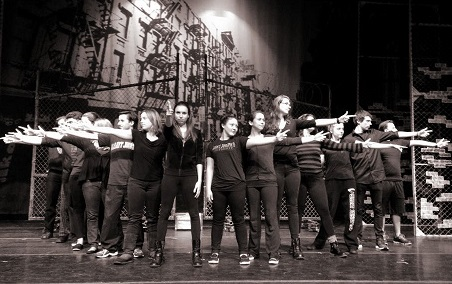

About Me
Biography
I was born in a small town in Bergen County, NJ, basically as far north as you can get. I have two brothers who believe it or not I get along with really well. I graduated as Vice President of my senior class with only 88 others, but I absolutely love the small-town feel. I tried almost every sport in the book, and stuck with basketball, cheerleading, and track throughout high school, but had to give most of them up to join the theatre company, which was one of my best decisions. I actually applied to SJU on a whim, but when I came for Accepted Students Day I knew this school was perfect.
My favorite color is pink, I love Broadway, and hate meat (except for chicken nuggets, which I eat for dinner almost every night, usually in dinosaur shapes). My favorite place in the world is Ocean Beach, NJ. A fun fact about myself is that my right thumb does not bend in the middle. There is no reason why, I was just born with a missing knuckle. I also hate revolving doors and have a weird fear of opening soup cans. I have made the absolute best friends at SJU and can't wait to roadtrip with eveyone after school ends to visit each other.
Meet my best friends!
SJU Theatre Company tech crew.
My home for the summers.
Just a few of my favorites.

Contact Info
Katie Corcoran
kc584846@sju.edu
(201) 615 4817